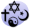

10 октября — 283-й день года (284-й в високосные годы) по григорианскому календарю. До конца года остаётся 82 дня. До 15 октября 1582 года — 10 октября по юлианскому календарю, с 15 октября 1582 года — 10 октября по григорианскому календарю. В XX и XXI веках соответствует 27 сентября по юлианскому календарю.
Праздники и памятные дни
Международные
- ООН — Всемирный день психического здоровья.
-
 Европейский союз — Европейский день борьбы против смертной казни
Европейский союз — Европейский день борьбы против смертной казни
Национальные
- Китайская Республика — Праздник Двух Десяток.
- Куба— День независимости.
 Польша — День посадки деревьев.
Польша — День посадки деревьев. - Украина — День работников стандартизации и метрологии Украины.
Религиозные
- Память мученика Каллистрата и дружины его: Гимнасия и иных (304 год);
- Память преподобного Савватия Соловецкого (1435 год);
- Память священномученика Петра (Полянского),
митрополита Крутицкого (1937 год); - Память священномученика Димитрия Шишокина пресвитера (1918 год);
- Память священномучеников Германа (Косолапова), епископа Вольского, и Михаила Платонова, пресвитера (1919 год);
- Память священномученика Феодора Богоявленского, пресвитера (1937 год);
- память апостолов от 70-ти Марка, Аристарха и Зины (I век);
- память мученицы Епихарии Римской (284—305 годы)[5];
- память преподобного Игнатия Глубокореченского (Каппадокийского) (963—975 годы)[6];
- память священномученика Анфима Иверянина, митрополита Валашского (1716 год)[7].